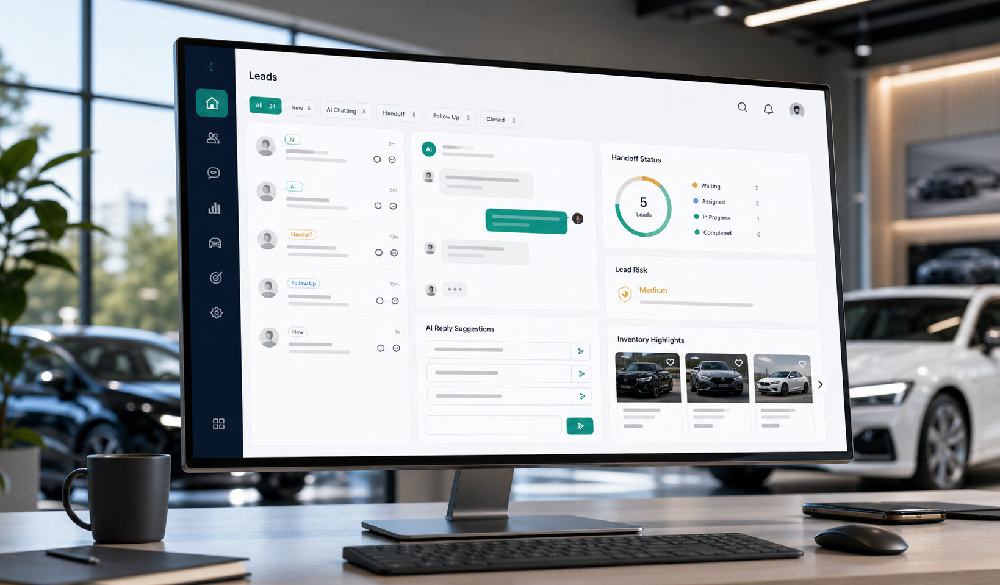

线索热度衰减快
客户留下手机号后，如果不能及时回应，咨询意愿会迅速下降。
车金 AI 售前跟进系统连接线索、车源知识、风险规则与销售协同， 帮车商完成早期咨询接待、意向识别、人工接管和低频召回。

二手车咨询高峰来得快、问题重复、风险边界多。系统负责标准化接待和风险识别， 销售负责关键判断、邀约到店和成交推进。
客户留下手机号后，如果不能及时回应，咨询意愿会迅速下降。
价格范围、车况说明、贷款材料、到店地址等问题消耗大量人工时间。
底价、事故、泡水、合同、金融等问题需要明确边界，不能让 AI 自由发挥。
是否已分配、是否已回复、为何转人工、有没有重复触达，都需要统一记录。
支持表格导入、渠道适配和销售分配，手机号默认脱敏展示。
结合车源、知识库、上下文和标准话术生成候选回复。
对高风险、低置信、证据不足场景执行改写、阻断或转人工。
高意向或高风险客户进入销售处理队列，并保留通知和处理记录。
导入、去重、分配、状态流转、来源记录和手机号脱敏。
基于知识库、车源资料和上下文，回答基础售前咨询。
把可售车辆、图片、价格口径和可公开字段组织成 AI 可用证据。
识别客户发来的车辆图片、截图和无关图片，低置信时转人工。
高意向、高风险、模型失败、证据不足时停止 AI 并提醒销售。
对长期未回复客户使用固定、可配置话术召回，受次数和时段限制。
查看接待任务、失败原因、错误码、处理建议和 trace_id。
记录 AI 候选、Guard 结论、销售接管、通知状态和异常处理。
官网展示的能力只面向授权业务系统与合规销售流程。系统不会宣称绕过平台规则， 不承诺替代人工成交，也不会让 AI 对敏感事实做无依据承诺。
营业时间、到店地址、基础购车材料、公开车源信息。
只说明可确认事实，引导销售进一步核实。
AI 停止自动回复，进入销售接管流程。
确认可答、禁答、转人工关键词和销售通知规则。
先支持表格和本地样本索引，再按接口条件接入渠道。
从少量销售和样本客户开始，观察回复质量与接管准确率。
用日志审计、失败原因和召回数据持续优化知识库。
不会作为产品目标。系统通过 Guard 规则限制敏感承诺，遇到底价、事故、泡水、金融、合同等问题优先转人工。
不会。一期聚焦线索接待、销售协同、任务状态、日志审计和低频召回，复杂 CRM 和业绩管理放到后续阶段。
系统可按配置生成低频召回任务，使用固定可审核文案，并受每日上限、静默时段和客户状态约束。
失败时不发送冒险兜底话术，系统会记录错误码、trace_id 和建议动作，必要时进入人工接管。
建议准备 20 条历史咨询、10 条风险问题、5 条图片样本和一份车源表，我们可以一起评估 MVP 接待效果。